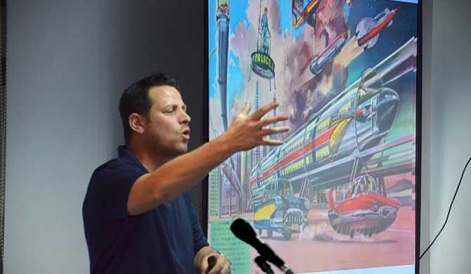
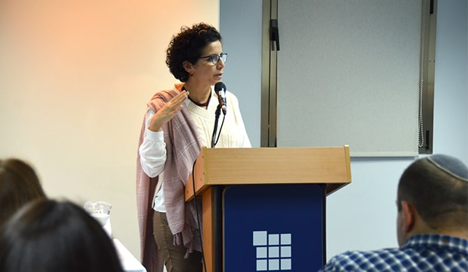
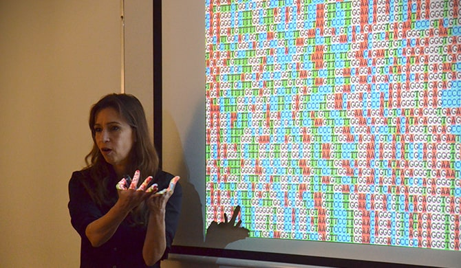
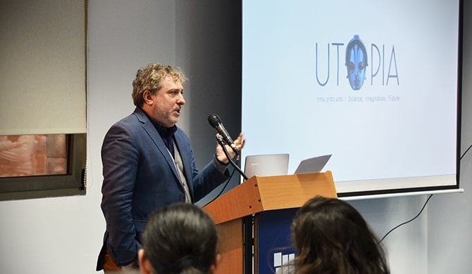
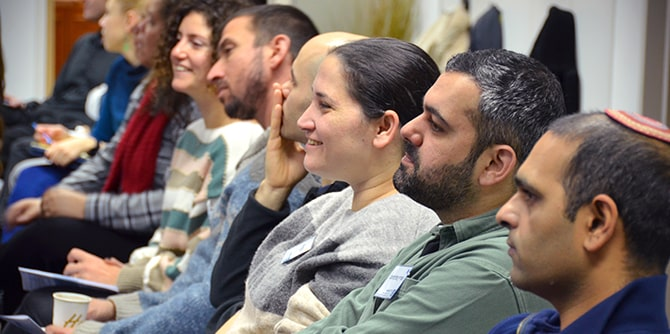

במסגרת יום הלימוד ביקשנו לבחון את התחומים והסוגיות המרכזיות שיעצבו את עתיד החברה הישראלית ולדון בהשלכותיהם – הן על העבודה היומיומית של העמיתים והן על חיינו המשותפים בה. ביום הלימוד השתתפו כ-70 עמיתים וחברי סגל מתוכניות המכון.

את היום פתח יובל מלחי, מרצה להיסטוריה ויוצר פודקאסטים, אשר הציג כמה מהשינויים העתידיים המתחוללים כבר כיום בעולמנו ומשנים את הדרכים שבהן אנו חושבים על ההווה והעתיד והאופן שבו אנו פועלים בעולם: כמה קרוב היום שבו נפסיק לנהוג בעצמנו? כיצד משפיעים רחפנים על הצלת חיי אדם אך גם על שיפור היכולות לחיסולם? מתי ניקח כדור נגד זקנה והאם בקרוב נוכל לחיות לנצח? לאחר הרצאת הפתיחה התפצלו העמיתים לקבוצות מעורבות, ובהן דנו בזוויות השונות של נושא-העל. בקבוצות נחשפו העמיתים למומחים בתחומם אשר דנו במשותף בסוגיות המרכזיות ובהשלכותיהן:
מה בוער בעתיד? עתידה של ישראל בלבו של מזרח תיכון מתחמם ומתייבש, בהנחיית
ד"ר עמיחי עמית. הסוציולוג
פרופ' דני רבינוביץ' עסק במשבר האקלים, אשר הוגדר לאחרונה על-ידי עצרת האו״ם כאתגר המכונן של זמננו. ההרצאה התמקדה בסקירת השינויים המתרחשים ואלו העתידים להתרחש בעולם ובישראל, וכן באתגרים העצומים אשר הם יביאו עמם. הדיון הקבוצתי עסק בבחינת הפעולות בשדה החינוך הדרושות לשם עמידה באתגרים וניצול ההזדמנויות שמשבר האקלים מביא עמו.

מקצועות המחר – תעסוקה, חינוך והשכלה בעולם של שינוי תמידי, בהנחיית
ד"ר נעה אפלויג. ד"ר איתן אלירם, מנכ"ל אינטראקטיב חדשנות בע"מ ומוביל חדשנות, הציג בפני העמיתים את השינויים המתרחשים בשוק העבודה בעקבות המהפכה הטכנולוגית. העמיתים בחנו את הדרכים שבהן קצב השינויים המואץ בשוק העבודה עשוי להשפיע על דפוסי הלמידה ועל הכשרת דור העתיד למקצועות המחר, ובהשפעות שוק העבודה העתידי על האופי והמבנה של בתי ספר ועל השיטות הפדגוגיות הנהוגות בו.
מדינה קטנה וצפופה: כיצד תשפיע הדמוגרפיה על עתידה של החברה הישראלית? בהנחיית
ד"ר ירון גירש. עד אמצע המאה ה-21 יוכפל מספר האנשים בישראל, והיא תהפוך לאחד המקומות הצפופים בעולם כולו.
ד"ר אחמד חליחל, סגן מנהל אגף בכיר דמוגרפיה ומפקד בלשכה המרכזית לסטטיסטיקה, הציג את תחזיות האוכלוסין של החברה הישראלית ל-50 השנים הבאות. הקבוצה התעמקה בהשפעת צמיחה זו על אופייה של המדינה ועל יכולתה לספק שירותי תחבורה, חינוך, תעסוקה, בריאות ודיור.

העל-אדם והגולם – לקראת האדם המהונדס, בהנחיית ד"ר ג'רמי פוגל. ד"ר ליאת יקיר, המתמחה בגנטיקה מולקולרית, הכניסה את העמיתים בקבוצתה לעומק החידושים הטכנולוגיים אשר יאפשרו בשנים הקרובות טיפולים חדישים למגוון מחלות, וטיפול גנטי מניעתי שיוודא את בריאותם של התינוקות הנולדים. הקבוצה הרהרה בעתיד המין האנושי ובהשלכות המוסריות של האפשרויות החדשות הנפתחות לפניו.
במושב הסיכום בחן
אורי אביב, מנהל "אוטופיה" – הפסטיבל הבינלאומי למדע בדיוני ולסיפור העתיד, את הדרכים שבהן יוצרי קולנוע ישראלים מדמיינים את עתידה של המדינה והחברה.

בתור מנהיגים בתחומי החינוך והחברה, עמדו העמיתים על ההכרח שבתכנון ובפעולה חוצת-מגזרים בתחומי האחריות שלהם ובמעגלים רחבים יותר, וכן על החשיבות הרבה שיש לעיסוק בתמורות הערכיות שהעולם העתידי יזמן. העמיתים הדגישו את החשיבות הרבה בעצם העיסוק במבט המשותף על סוגיות בעלות השפעה כלל-ארצית ואף עולמית.
כמו כן הצביעו העמיתים על המגוון והעושר של האנשים והדעות שאליהם נחשפו. "היום היה מרתק", אמרה אחת העמיתות, "הוא פתח לי עולם שאני פחות מתעסקת בו ביום-יום, אך אני מבינה שהוא רלוונטי וחשוב לי. מאד אהבתי את השיח האישי שנוצר בין הקבוצות השונות".
עמיתי תוכניות מכון מנדל למנהיגות ציינו כי אחד הלקחים המרכזיים עבורם מיום זה היה ההבנה שנדרשת חשיבה משותפת וגמישה בין הקבוצות החברתיות השונות בחברה, מעבר לאינטרסים הקבוצתיים, אחד העמיתים סיכם: "גמישות, גמישות ושוב גמישות. בעידן של מציאות משתנה, האתגר הוא לפתוח את הראש ואת הלב כדי ללמוד איך מתנהלים במציאות הזאת, ואיך מגייסים את השינויים הבלתי נמנעים לטובתנו ומנתבים אותם למקום בונה ומתקן ככל האפשר".

{kind=link}
{kind=link}
{kind=link}
{kind=link}
{kind=link}